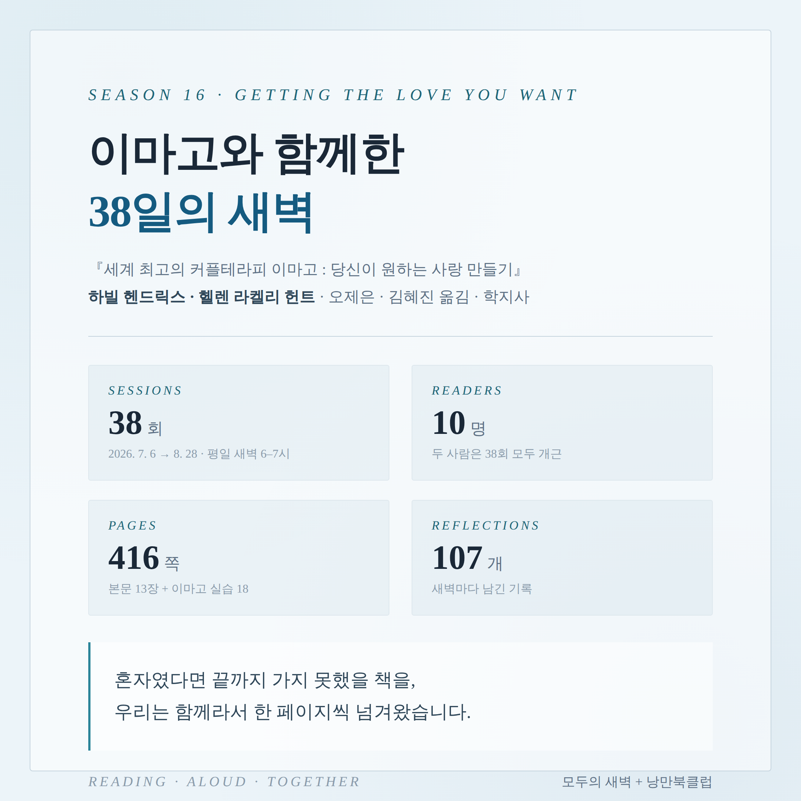
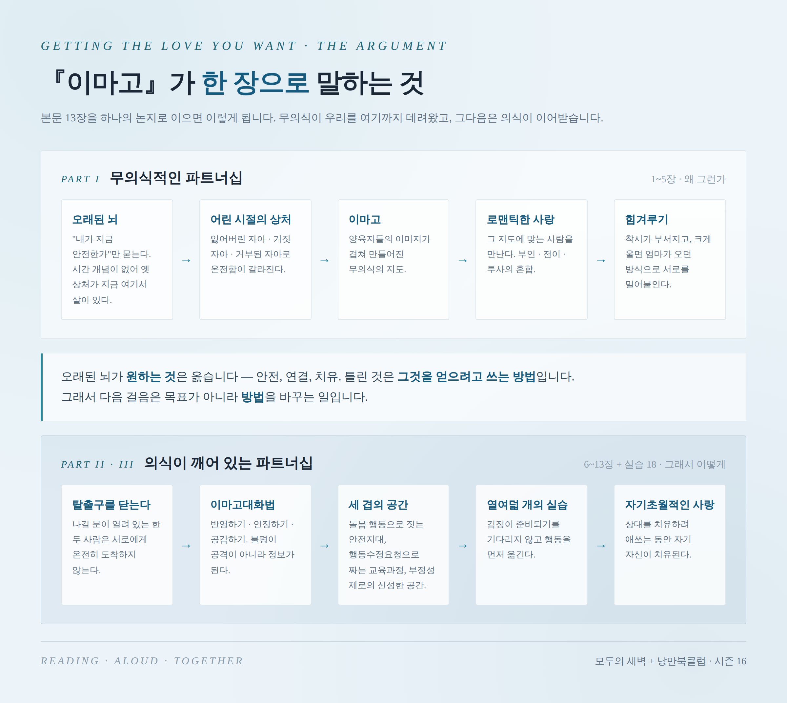
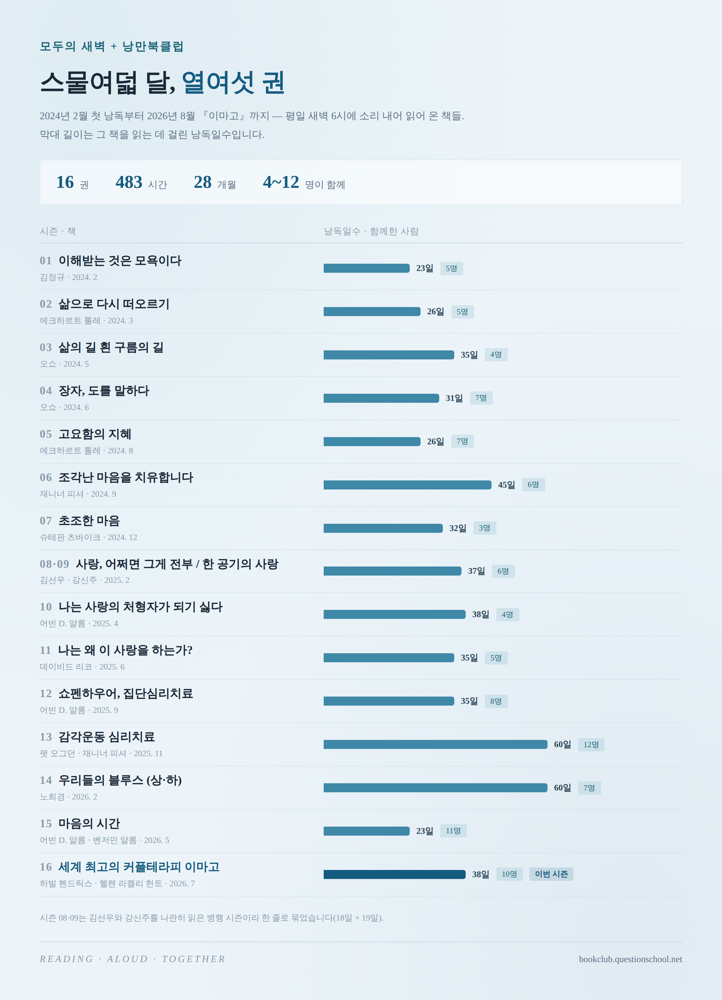

낭만북클럽 시즌 16을 마치며

8월 28일 금요일 새벽, 시즌 16의 마지막 낭독이 끝났습니다. 하빌 헨드릭스와 헬렌 라켈리 헌트의 『세계 최고의 커플테라피 이마고 : 당신이 원하는 사랑 만들기』(오제은·김혜진 옮김, 학지사)를 7월 6일부터 여덟 주에 걸쳐 함께 읽었습니다.
평일 새벽 6시부터 7시까지, 앞의 30분은 소리 내어 읽고 뒤의 30분은 이야기를 나눴습니다. 그렇게 38번의 새벽이 쌓였습니다.
| 기간 | 2026년 7월 6일 (월) → 8월 28일 (금) |
|---|---|
| 회차 | 38회 · 평일 새벽 6:00–7:00 · Zoom |
| 함께한 사람 | 10명 |
| 낭독 분량 | 416쪽 — 본문 13장 + 이마고 실습 18개 |
| 남긴 기록 | 107개 |
| 평균 출석률 | 70% |
숫자 가운데 오래 눈이 머무는 건 두 가지입니다. 하나는 38분의 38 — 한 번도 빠지지 않고 끝까지 자리를 지킨 사람이 둘 있었다는 것. 다른 하나는 107개의 기록 — 읽고 나서 그냥 흩어지지 않고, 그날의 한 줄을 남겨 둔 흔적이 그만큼이라는 것입니다.
물론 70%라는 숫자 안에는 못 온 날들도 함께 들어 있습니다. 새벽에 일어나는 일은 늘 어렵고, 우리는 처음부터 그걸 서로에게 묻지 않기로 했습니다. 늦잠 잔 날이 있어도 다음 날 아침 화면에 다시 얼굴이 뜨면 그걸로 충분했습니다.

이 책의 논지는 뜻밖에 단순합니다. 우리가 특정한 한 사람에게 그토록 끌린 이유는, 오래된 뇌가 그 사람과 어린 시절의 양육자를 같은 사람으로 혼동했기 때문이라는 것. 그 혼동 위에서 로맨틱한 사랑이 피고, 착시가 걷히면 힘겨루기가 시작됩니다. 여기까지가 1부입니다.
2부에서 저자들이 하는 말이 이 책을 특별하게 만듭니다. 오래된 뇌가 원하는 것은 틀리지 않았다는 것. 안전, 연결, 어린 시절 상처의 치유 — 원하는 것은 옳고, 틀린 것은 그것을 얻으려고 쓰는 방법이라는 것. 그래서 이 책이 제안하는 건 목표를 바꾸는 일이 아니라 방법을 바꾸는 일입니다. 탈출구를 닫고, 반영하기·인정하기·공감하기의 대화법을 익히고, 감정이 준비될 때까지 기다리지 않고 행동을 먼저 옮기는 것.
그리고 3부에는 그 방법을 실제로 해 보는 열여덟 개의 실습이 있습니다. 우리는 이 실습들도 건너뛰지 않고 함께 읽었습니다.
솔직히 말하면 이 책을 고를 때 걱정이 있었습니다. 커플을 위한 책을 대부분 혼자 참여하는 낭독 모임에서 읽는 게 맞을까. 옆자리에 파트너가 없는 사람에게 이 실습들이 무슨 소용일까.
여덟 주를 지나고 나니 그 걱정은 조금 다른 자리로 옮겨 갔습니다. 이 책이 다루는 건 결국 가까운 사람 앞에서 내가 어떤 사람이 되는가에 관한 이야기였습니다. 배우자든, 부모든, 다 큰 자식이든, 십 년 된 친구든 — 오래된 뇌는 그 앞에서 똑같이 작동합니다. 그래서 실습을 읽으며 각자가 떠올린 얼굴은 저마다 달랐고, 그 다름이 오히려 나눔을 풍성하게 만들었습니다.
한 가지 더. 낭만북클럽에서는 본명 대신 별칭을 쓰고 수평어로 이야기합니다. 직함도 나이도 잠시 내려놓고 책 앞에 나란히 앉기 위한 작은 장치인데, 하필 이 책과 잘 맞았습니다. 위계가 없는 자리에서만 할 수 있는 이야기가 있고, 이 책은 계속 그런 이야기를 물어 왔으니까요.
이 모임이 묵독이 아니라 낭독 모임이라는 점도 이번 시즌에 새삼 다르게 다가왔습니다.
이마고대화법의 첫 단계는 상대가 한 말을 그대로 되돌려 주는 '반영하기'입니다. 해석하지 않고, 덧붙이지 않고, 들은 그대로. 그런데 낭독이 정확히 그 연습이었습니다. 저자의 문장을 내 말로 요약하지 않고 있는 그대로 소리 내어 옮기는 일 — 여덟 주 동안 우리는 매일 아침 그걸 하고 있었던 셈입니다.
혼자 눈으로 읽었다면 넘겼을 문장에서 목소리가 걸리는 순간들이 있었습니다. 읽다가 잠시 멈추는 그 몇 초를, 화면 너머의 사람들이 함께 기다려 주는 시간. 그게 이 모임이 여덟 주 동안 준 것 중에 가장 좋은 것이었다고 생각합니다.
낭독이 끝나도 책은 남습니다. 시즌 16에서는 함께 읽은 내용을 다시 찾아볼 수 있도록 「이마고 다시 보기」 페이지를 만들어 두었습니다.

2024년 2월 13일 첫 낭독으로 시작해 이번이 열여섯 번째 책입니다. 스물여덟 달 동안 483시간을 함께 읽었습니다.
톨레와 오쇼를 지나, 재니너 피셔와 어빈 얄롬을 지나, 김선우와 노희경을 지나 여기까지 왔습니다. 어떤 시즌은 넷이었고 어떤 시즌은 열둘이었습니다. 목록을 다시 보면 우리가 무엇을 궁금해하며 지나왔는지가 그대로 보입니다.
책은 매개일 뿐이었습니다. 진짜 읽어 온 텍스트는 각자의 삶이었습니다.
9월 7일 월요일, 위화(余華)의 장편소설 『원청(文城)』(문현선 옮김, 푸른숲, 588쪽)으로 시즌 17을 시작합니다. 10월 29일까지 35회에 걸쳐 읽습니다.
심리학과 치유의 언어를 여러 시즌 지나왔으니, 이번엔 이야기 속으로 들어가 보려 합니다. 닿지 못한 곳과 끝내 만나지 못한 사람에 관한 소설입니다. 1부를 린샹푸의 눈으로 다 읽고 나면, 2부에서 같은 이야기를 샤오메이의 눈으로 다시 읽게 됩니다. 안다고 믿었던 것이 뒤집히는 자리가 이 소설에 있습니다.
평일 새벽 6시부터 7시까지, 하루 열댓 쪽. 혼자였다면 끝까지 가지 못했을 책을, 우리는 함께라서 한 페이지씩 넘겨왔습니다. 이번 한 권도 그렇게 가 보려 합니다. 새로 오시는 분도, 오래 함께한 분도 모두 환영합니다.